|

| Geoff Mandel: o
cartgrafo estelar de Jornada
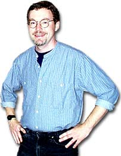 |

Galeria:
"Conhea mais do trabalho de Geoffrey Mandel"
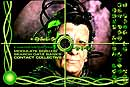
Tela feita para o game
"Star Trek: Borg"
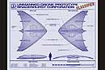
Projeto de sonda militar similar
a OVNI, para a srie"JAG"
Poster para "Perversions
of
Science", uma srie da
HBO
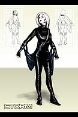
Ilustrao de Storm, para
"X-Men"
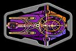
A mesa da engenharia da
Enterprise (NCC-1701-E)
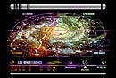
Imagem da Astrometria da
USS Voyager mostra seu
caminho at a Terra
|
Trek Brasilis - Vendo pelo seu currculo, sua relao com
Jornada nas Estrelas to velha quanto o seu primeiro trabalho listado -- a autoria, como escritor e ilustrador, do livro "The Star Fleet Medical Reference", da Ballantine Books (1977). Que voc era um f desde o comeo j fica respondido, mas Jornada nas Estrelas efetivamente motivou e apontou direes para sua carreira e para seus objetivos profissionais ao longo de todos esse anos? Geoffrey Mandel - Vou comear com uma historinha. L em 1979, Doug Drexler e eu ramos provavelmente os dois maiores fs de Jornada nas Estrelas na cidade de Nova York. Sabamos que "Jornada nas Estrelas: O Filme" estava sendo filmado, e sabamos que tnhamos que ser parte dele. Ento tiramos frias do trabalho e da escola para voar para Los Angeles e nos esforar para se infiltrar nos palcos de som da Paramount. Claro, no tnhamos nenhum contato, mal tnhamos um lugar para ficar, e somente por puro chutzpah [termo idiche cujo significado algo como 'caradura', 'extrema autoconfiana'] finalmente conseguimos entrar no estdio, subir as escadas na ponta dos ps at o departamento de arte de Jornada nas Estrelas (ironicamente, a mesma sala onde trabalhei em meus dois anos em Voyager) e falar com alguns dos designers, incluindo Mike Minor e Lee Cole. O que foi para eles provavelmente uma reunio de rotina com dois fanticos por Jornada foi um momento decisivo em minha carreira, e na de Doug -- ns subitamente descobrimos que havia na verdade um TRABALHO REMUNERADO para pessoas como ns, que gostavam de projetar naves e desenhar pequenos diagramas de pistolas de raios. Posso me lembrar de voltar para casa em Nova York e contar minha me que eu finalmente sabia o que queria fazer da minha vida, e ela deu uma boa risada quando eu disse que era trabalhar em departamentos de arte de fico cientfica. Quem possivelmente poderia viver s custas disso?! Ento, para responder sua pergunta, Jornada nas Estrelas foi uma poderosa fora motivadora em minha carreira profissional, mesmo que por muitos anos eu no tivesse nada a ver com ela alm de assistir a episdios de A Nova Gerao. TB - Seu primeiro envolvimento com a real produo de Jornada nas Estrelas foi em 1994, com Deep Space Nine. Ento voc se transferiu para a produo de "Space: Above and Beyond", ento "JAG", ento para o filme "Jornada nas Estrelas: Insurreio", ento "Arquivo-X", ento "VIP", ento de volta a Jornada, com Voyager e Enterprise, e agora voc est mudando de novo. Ento, diferente de muitos de seus colegas de Jornada no departamento de arte ao longo da ltima dcada, voc parece se sentir meio desconfortvel em se estabelecer num lugar por muito tempo. isso mesmo? Mandel - No sempre escolha sua ir de srie a srie ou de filme a filme; simplesmente a forma como a indstria do entretenimento funciona. A maioria dos filmes dura por apenas uns poucos meses, e a maioria das sries de TV no sabe se ser renovada aps 13 episdios; agora mesmo, estou trabalhando em uma srie que pode durar apenas cinco episdios. Jornada nas Estrelas um pssaro raro, uma srie que garantido que tenha sete temporadas, e, com sorte, leve a outra srie de sete anos. As pessoas que trabalham em Jornada na Estrelas sabem que tm uma coisa boa acontecendo, e, como resultado, uma dureza conseguir um trabalho em Jornada -- voc tem que esperar at que algum morra ou se aposente! Quanto a mim, eu finalmente tive a chance na sexta temporada de Voyager, quando Wendy Drapanas decidiu que era hora de partir, e eu fiquei agarrado a isso nas trs temporadas seguintes. Antes disso, eu era meio que um temporrio de Jornada, trazido quando eles precisavam de uma pessoa a mais; e, com sorte, vou continuar recebendo uma ligao de Mike Okuda quando eles precisarem de um artista grfico para o prximo filme ou projeto especial. TB - Muitos artistas consideram Jornada nas Estrelas algum tipo de "paraso" em termos criativos. Sternbach pareceu um pouco assim quando eu falei com ele, no ano passado. Voc tambm acha que Jornada abre as portas da criatividade para a criao de equipamentos, naves, painis, figurinos e designs aliengenas? Mandel - Embora seja sempre um prazer trabalhar em Jornada se voc um f, eu no chamaria de paraso criativo, e eu duvido que Rick Sternbach tenha querido dizer exatamente isso, especialmente aps os estressantes ltimos meses de Voyager! Como em qualquer srie de televiso, Jornada nas Estrelas tem uma hierarquia bastante rgida, com os produtores no topo, os roteiristas e diretores um nvel abaixo, o designer de produo abaixo disso, e assim por diante at o diretor de arte, o mestre de props, o decorador de set, o artista de cenrios supervisor, at o lugar mais baixo, onde voc est. bem raro quando todas essas pessoas acima de voc pensam que voc fez algo certinho de primeira, e usualmente uma questo de negociao at que voc tenha convencido todas as pessoas-chave ou tenha ficado sem tempo antes que o episdio seja filmado. No me entenda mal -- TODOS os filmes e sries de TV so assim, e Jornada melhor que a maioria. As ltimas duas temporadas de Voyager foram um prazer de trabalhar principalmente porque os produtores estavam concentrados na pr-produo de Enterprise, e ningum realmente se importava com o que eu ou Rick Sternbach ou Tim Earls fazamos. Ns trs todos ramos apaixonados por nosso trabalho e acho que fizemos coisas muito legais durante aquelas duas temporadas em que ningum estava prestando ateno. Em Enterprise, uma srie novinha em folha, com muito mais presso, ento no houve tanta liberdade. TB - Uma das principais idias por trs da nova srie, Enterprise, era soprar algum ar fresco para as pessoas envolvidas com o franchise. Os produtores-executivos Rick Berman e Brannon Braga, assim como outras pessoas envolvidas com a srie, especialmente no departamento de arte, pareciam revigoradas por esse sentimento no ano passado. Voc, em contrapartida, decidiu deixar a srie no segundo ano, dizendo estar "criativamente frustrado". No foi tanta novidade afinal essa volta ao sculo 22? 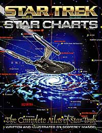 Mandel - Minha frustrao criativa teve muito pouco a ver com a srie, que eu acho que sensacional -- estou ansioso para ver a segunda temporada sem nenhuma idia do que vai acontecer. No h dvidas de que Enterprise soprou nova vida no franchise Jornada nas Estrelas -- o elenco espetacular, e Rick e Brannon esto claramente se divertindo, assim como se saindo com alguns timos roteiros. Na minha opinio, "Broken Bow", "Dear Doctor" e "Fusion" so episdios to bons quanto os que vimos antes em Jornada nas Estrelas. Tendo dito isso, eles me trouxeram depois do piloto, e no havia realmente muito para fazer em termos de grficos -- o estilo da srie j estava bem estabelecido. Eu gostei de fazer os grficos aliengenas esquisitos para "Unexpected" e alguns cenrios Vulcanos legais, mas difcil ficar empolgado quando para projetar um grande "4" para o compartimento de carga em "Fortunate Son". Alis, eu na verdade tive de subir uma escada e trocar aquele "4" por um "8" cerca de meia dzia de vezes, porque eles filmaram as cenas do compartimento de carga fora de ordem!TB - Minha impresso a de que algumas coisas na administrao mudaram de Voyager para Enterprise, j que a produo da ltima temporada de Voyager estava quase que indo por inrcia e Enterprise precisava ser concebida a partir do zero pelos produtores. Essa mudana de ritmo deve ter se traduzido tambm na forma como os produtores trabalhavam com os artistas. Como foi isso? Mandel - H uma certa ironia no fato de que um novo conceito e um novo elenco que sopram vida no franchise nem sempre se traduzem em tarefas empolgantes para ns no departamento de arte. As pessoas que eu vi se divertindo eram os ilustradores: John Eaves, Doug Drexler e Dave Duncan. No estou certo de que os artistas grficos ou os designers de cenrios estavam sendo to desafiados criativamente. TB - Muitas das pessoas atualmente no departamento de arte de Jornada so entusiastas da srie? Mandel - O absolutamente PIOR modo de conseguir um trabalho em Jornada nas Estrelas dizer a eles que voc um f de Jornada nas Estrelas! Quando eles comearam Enterprise, eles tomaram uma deciso consciente de trazer algum sangue novo, e no s os suspeitos de sempre; mas, na prtica, significou que fs como Rick Sternbach, Tim Earls e eu no foram chamados de volta. Entretanto, alguns fs que tinham trabalhado em DS9 e estavam h algum tempo fora voltaram quando Enterprise comeou, ento o nmero total de fs acabou ficando mais ou menos o mesmo. TB - Conceber o visual da nova srie deve ter sido divertido, dadas as oportunidades de fazer alguns tributos srie original. Esse foi um "bnus" divertido a esse trabalho? Voc mesmo chegou a colocar algumas coisinhas em seus trabalhos para Enterprise? Mandel - Sim, eu amo as referncias srie original -- as faixas coloridas nos uniformes que correspondem s das tnicas da Srie Clssica, os detalhes no exterior da NX-01 que vm direto da Enterprise original, e a nave Vulcana que ecoa a Starliner de Matt Jefferies que foi vista no deck de recreao de "O Filme". De minha parte, eu me diverti usando os caracteres Vulcanos legais do robe do Spock em "O Filme" (e alguns bonitos IDICs) nas relquias de "The Andorian Incident" e na nave Vulcana em "Fusion". Em outros casos, eu provavelmente teria sido at menos fiel Srie Clssica -- por exemplo, eu no teria usado a fonte Amarillo de aparncia militar para escrever "ENTERPRISE NX-01" nos shuttlepods, mas eu teria escolhido algo mais contemporneo, como as que esto no nibus espacial. L em 1967, eles simplesmente no tinham as ferramentas grficas que temos agora, e, se eles tivessem, certamente as teriam usado. TB - Muitos fs criticaram a "nova velha" Enterprise, um conceito claramente baseado no design da Akira. Qual sua opinio pessoal sobre os esforos de Drexler e Eaves? Mandel - Eu adoro a NX-01, e acho que as crticas so totalmente sem base. A Akira foi projetada na ILM, no pelo departamento de arte de Jornada nas Estrelas, e, se no fosse pelos vrios livros de referncia, ningum nunca teria ouvido falar dela -- voc mal a v em "Primeiro Contato"! E, enquanto a Akira uma nave meio feia e tem "pernas tortas" em alguns ngulos, a NX-01 delineada e elegante, e parece bem de quase qualquer ngulo. Estando por perto na poca, eu tambm sei que Doug Drexler e John Eaves fizeram EXATAMENTE o que os produtores pediram a eles: Rick e Braga tinham opinies bem fortes e sabiam exatamente o que queriam. Houve uma verso anterior da NX-01 com um casco secundrio e uma haste dorsal, mas o sentimento geral o de que ela parecia muito com a Enterprise da Srie Clssica. TB - Quando eu falei com Andrew Probert, ele foi muito crtico com relao s atitudes de Rick Berman, l em 1988. Ele disse que Berman no entendia cincia e fico cientfica e que era incapaz de discutir inteligentemente problemas de design. Era s uma questo de dizer, 'oh, isso no parece bom, isso parece bom', e assim por diante. Outros, como Sternbach, dizem ter tido muita liberdade criativa. Qual a sua opinio pessoal sobre a questo e qual a sua opinio sobre Rick Berman? Mandel - O sr. Berman pode no ter um forte background em fico cientfica, mas o que voc precisa para Jornada nas Estrelas ter um forte background em narrativa, e Rick e Brannon se mostraram capazes nesse respeito. Eu tive pouco contato com o sr. Berman, j que meu trabalho aprovado (ou reprovado) em um nvel mais baixo; apesar disso, eu descobrir que tanto ele quanto Brannon so caras razoveis que apreciam bom trabalho. Alguns produtores em outras sries (que devem permanecer annimos) acham que precisam gritar e rebaixar trabalho criativo apenas para mostrar quem o chefe. TB - Sendo tambm escritor, voc tentou sugerir algumas idias para episdios de Jornada ou de outras sries durante esse anos? Mandel - Sim, eu ofereci histrias para DS9 duas vezes, uma antes de a srie ir ao ar e uma vez durante a primeira temporada, e para Voyager tambm. Com um parceiro de escrita, eu sugeri alguma coisa a Michael Piller, que no poderia ter sido mais legal e mais encorajador. O problema que eles j ouviram sobre toda idia de histria possvel, ento quando a sua vez de fazer a sugesto, a quarta ou quinta vez para eles. Meu conselho para algum indo para uma sesso de pitch (sugesto de histrias) seria ir com idias que REALMENTE so inovadoras; outro caso em que algum sem um background em Jornada nas Estrelas ou em fico cientfica poderia realmente ter uma vantagem. TB - Voc trabalhou tambm para dois filmes de Jornada, "Generations" (alguns painis, voc menciona em seu currculo) e "Insurreio" (parece que este foi no que voc mais trabalhou). Quais so as principais diferenas, para um artista, entre trabalhar para uma srie de Jornada ou para um filme de Jornada? Mandel - Eu era um assistente de produo durante "Generations", e meu trabalho era basicamente fazer o caf e entregar as plantas com os designs, ento eles foram muito generosos em dar material para eu projetar. Eu acabei fazendo muitos dos grficos da ave-de-rapina Klingon, que apareceu em DS9 por muitos anos depois, assim como os logotipos futuristas das redes nas cmeras dos reprteres. Tambm, muitas, muitas pginas do lbum de fotografias de Picard, que nunca chegamos a ver no filme, mas que, se voc for ao "Star Trek: The Experience", em Las Vegas, elas esto expostas l. Em "Insurreio", eu fui o principal artista de cenrio, o que significa que a maioria dos painis Son'a e os vrios PADDs (que o sr. Frakes gentilmente destacou) eram meus. Muitos dos grficos da Enterprise-E j haviam sido projetados para "Primeiro Contato", mas eu fiz alguns, incluindo as estaes de cincia da ponte e a "mesa de bilhar" da engenharia, assim como a coisinha mvel luminosa do turbo-elevador. Mas, para responder pergunta, a diferena entre trabalhar num filme de Jornada e numa srie de TV (1) voc tem mais tempo e dinheiro; (2) voc precisa suar nas coisinhas pequenas, ou ento voc vai ver seu trabalho torto de fita adesiva em uma tela grande com 40 ps de largura [uns 14 ou 15 metros]. Alm disso, basicamente o mesmo grupo de pessoas fazendo os filmes e a srie. TB - "Insurreio" teve alguns designs de arte incrveis, mas sofreu por um roteiro pobre e efeitos especiais ruins. Vocs artistas no se sentem desconfortveis com o fato de que, no importa quo bom seu trabalho em um projeto seja, algumas coisas na longa corrente entre a concepo e a produo possam por o esforo inteiro a perder? Mandel - Uma forma melhor de colocar isso seria a de que, quando o roteiro timo, ficamos ainda MAIS empolgados. Um roteiro mais ou menos no muda o fato de que ainda fazemos o melhor trabalho que podemos; algumas vezes so os roteiros no-to-bons que se tornam os melhores episdios, e vice-versa. TB - Muitos fs ficaram tristes quando ouviram que os cenrios de Voyager iam ser desmontados e destrudos. Por que a Paramount no preservou alguns dos cenrios ou at os levou para o "The Experience", em Vegas, em vez de simplesmente destru-los? No seriam uma boa adio atrao que voc tambm ajudou a desenvolver? Mandel - Eu acho que a maioria dos fs no percebe que os cenrios de Voyager poderiam ser reconstrudos do nada em uma semana se houvesse uma necessidade para eles -- todas as plantas existem, e se h uma coisa que a equipe de construo de Jornada sabe fazer, recriar cenrios de episdios anteriores. Como um exemplo, ns reconstrumos a cmara da Rainha Borg do nada no uma, mas duas vezes, enquanto eu trabalhei para Voyager: para "Unimatrix Zero" e ento para "Endgame". Seria muito caro manter cenrios como aquele montados por meses seguidos s para o caso de voc ter a oportunidade de us-los! Tambm, voc precisa lembrar que os cenrios em si so relativamente finos -- basicamente madeira compensada, dois por quatro, e tinta. Eles no durariam muito em uma atrao de trfego pesado como a "Star Trek: The Experience", e de fato todos os cenrios da Enterprise-D em Las Vegas tiveram de ser reprojetados com suportes de ao e materiais "do mundo real". Mesmo os adesivos foram protegidos por coberturas de Plexiglas! 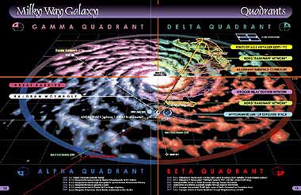 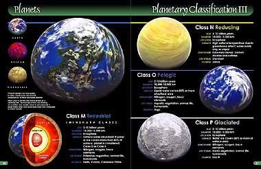 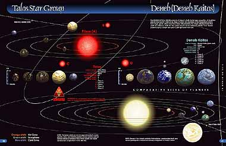 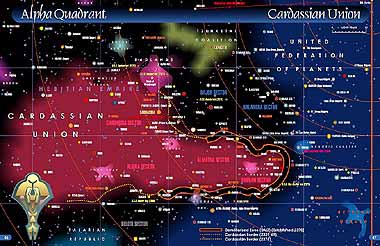 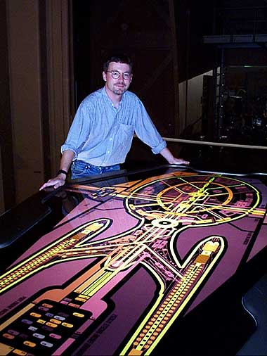
|

{kind=link}
{kind=link}
{kind=link}
{kind=link}
{kind=link}